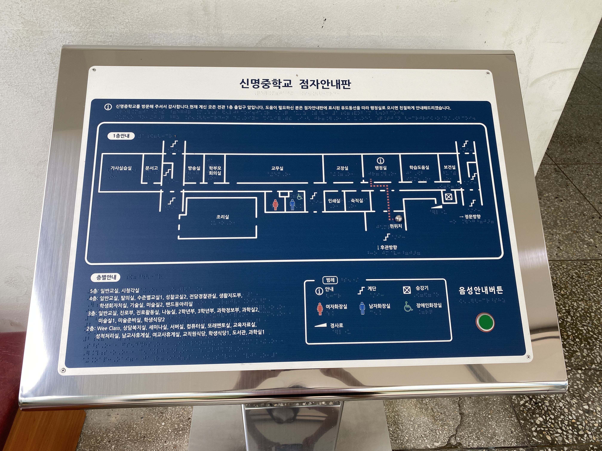
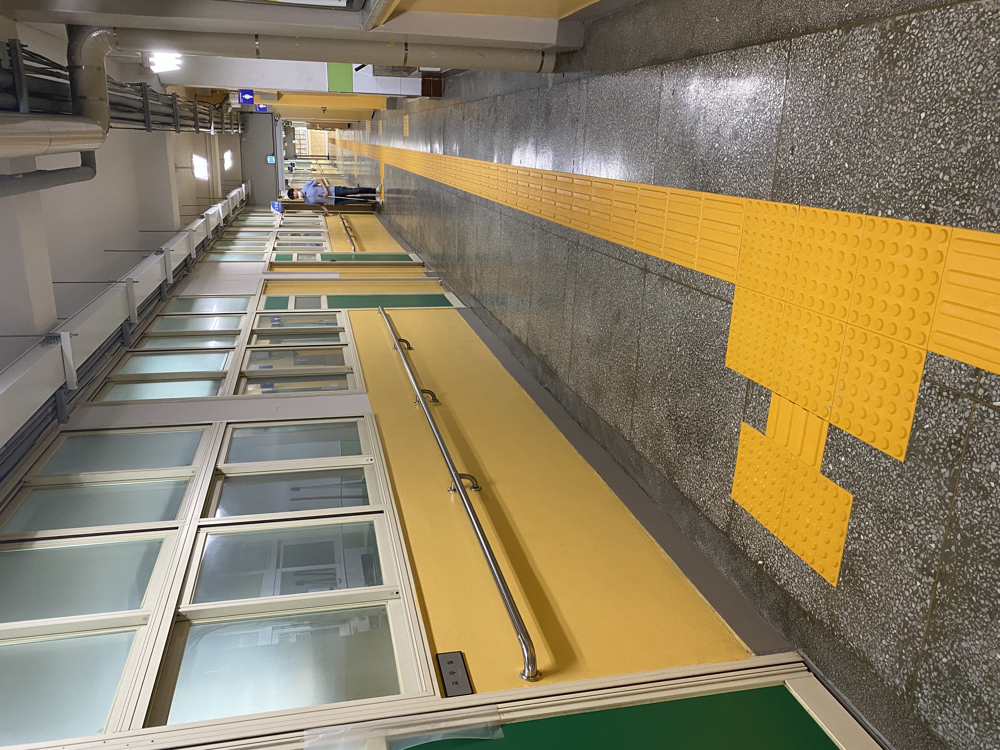
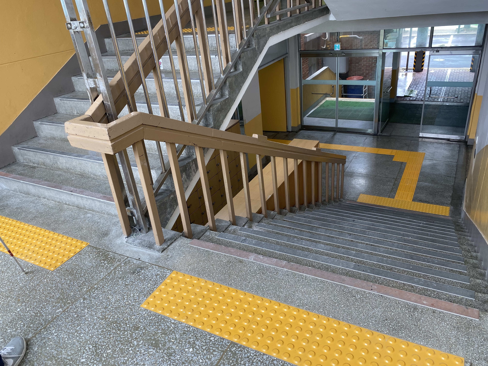
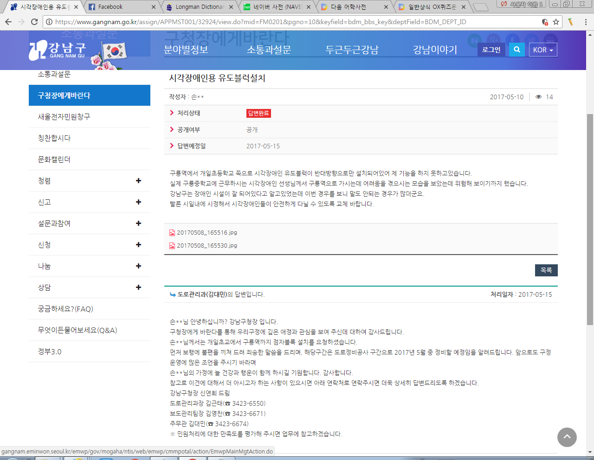
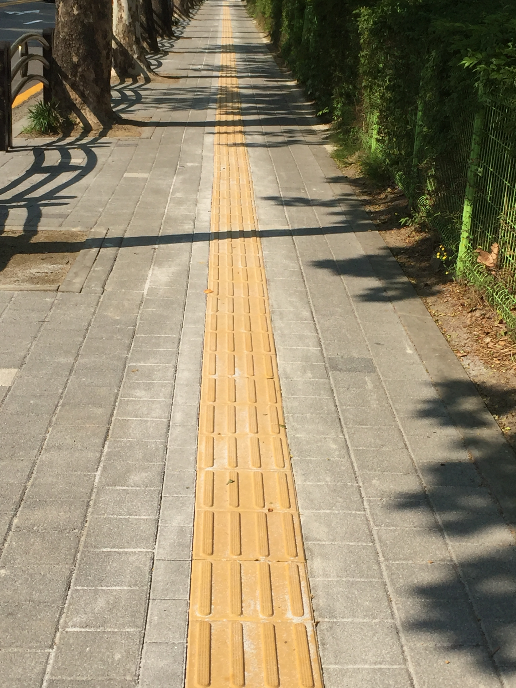
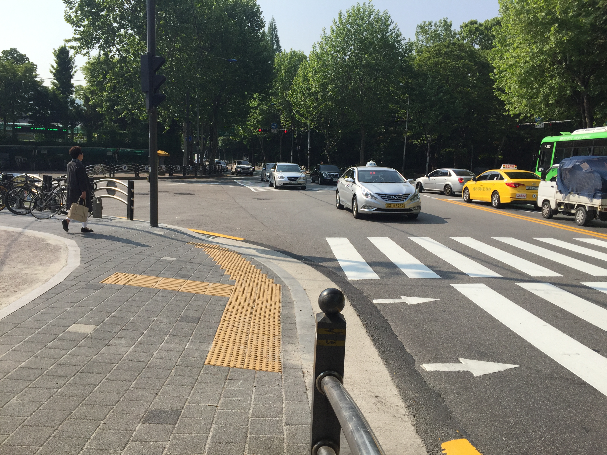

신명중학교 사례를 중심으로
김헌용
신명중학교 교사
함께하는장애인교원노동조합 위원장
2025년 10월 22일
"선생님, 어느 정도나 보이세요?"
15년 전, 첫 발령 후 한 학생이 건넨 질문
✓ 교직 경력 15년
✓ 업무보조인력 15명 이상 협업
✓ 전국 시각장애인교원 4,000명 이상
💡 관리자의 의지가 예산 확보의 핵심

중앙현관 점자 안내도

1층 교무실 앞 복도

계단 점자블록
점자 교과서는 시각장애인교원에게
교육 활동의 필수 도구
업무 범위와 책임 구분
일상적 피드백과 조율
협력적 파트너십 구축
구룡중학교 사례 (2017)
학생들의 구청 민원
→ 1개월 만에 점자블록 설치

학생들이 제출한 강남구청 민원과 구청의 답변

설치 완료된 점자블록

횡단보도 점자블록
신명중학교 관리자의 적극적 지원
💬 "공무원이나 교원으로서 정당한 권리이고,
학교 입장에서도 정책 개선에 기여하는 활동"
✓ 장애인교원 권익 증진이 교육 환경 개선으로 이어짐
민원 대응 시
"영어교사를 교체해 달라"는 요구에
→ 장애인차별금지법 근거로 설득
→ 교사의 심리적 부담 최소화
업무 배정 시
3년 연속 1학년만 담당 배정
→ "선의의 차별"
→ 전문성 발휘 기회 제한
선의의 차별이 아닌 진정한 배려
당사자의 의견을 듣고 함께 결정
포괄사업비, 교육청 예산, 지역사회 협력
관리자의 의지가 지원 확보의 핵심
장애인교원마다 필요한 지원이 다름
직접 물어보고 함께 해결책 찾기
환경과 지원의 완성은
문화 조성에 있다
일상적 상호작용이 문화를 만든다
교원 근무 환경 = 학생 교육 환경
포용적 문화는 모두를 위한 것
시각장애인교원도
학교 공동체의 동등한 구성원
김헌용
신명중학교 교사
함께하는장애인교원노동조합 위원장